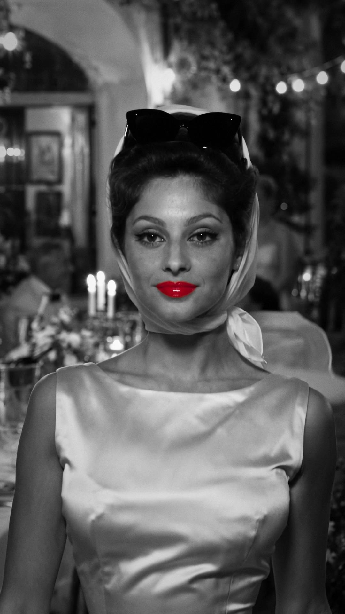
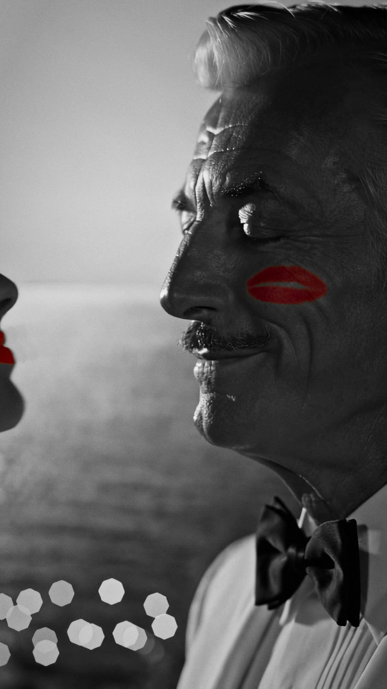
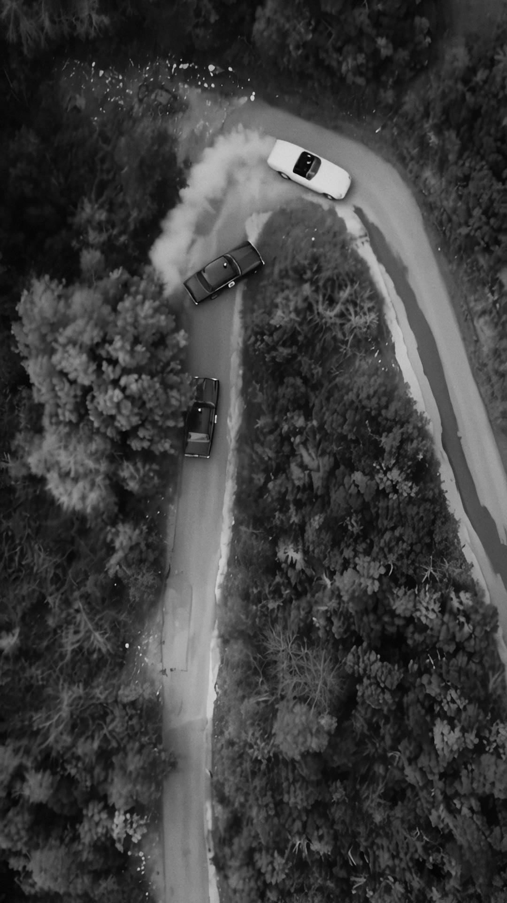
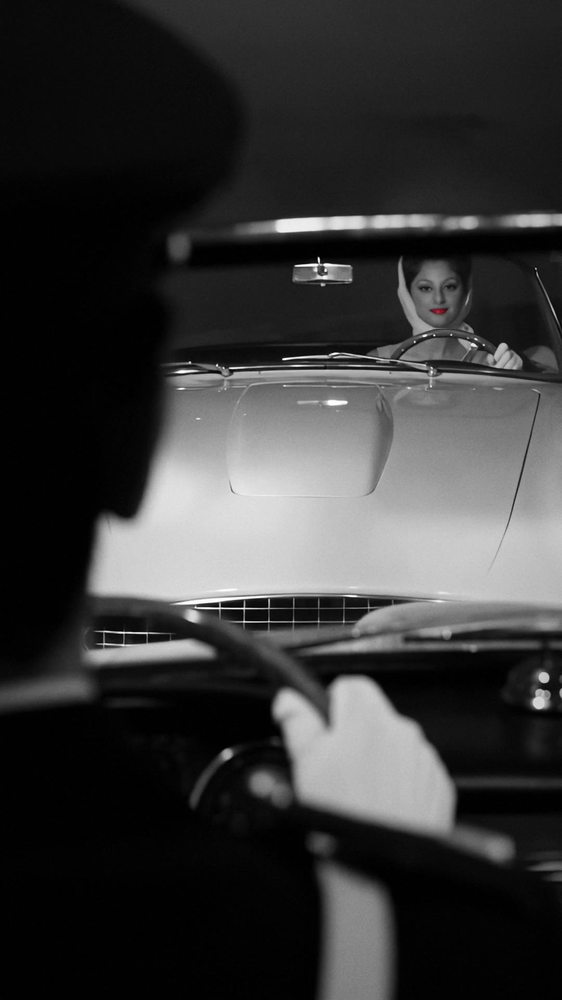
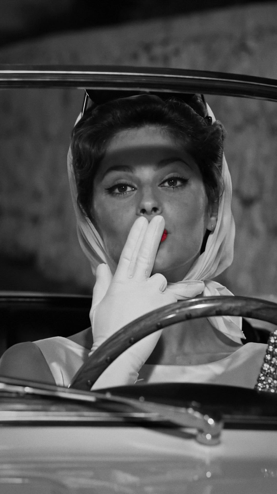
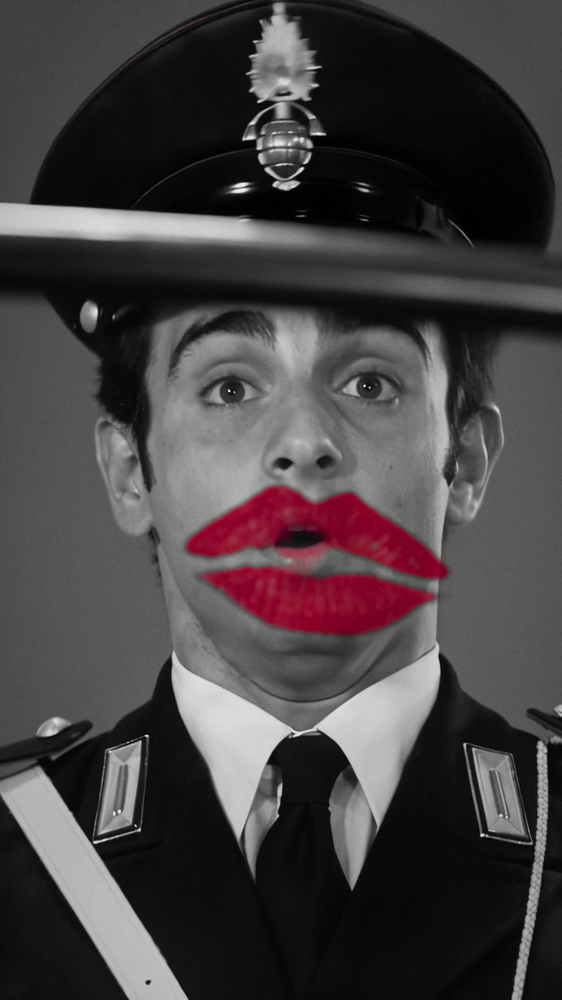
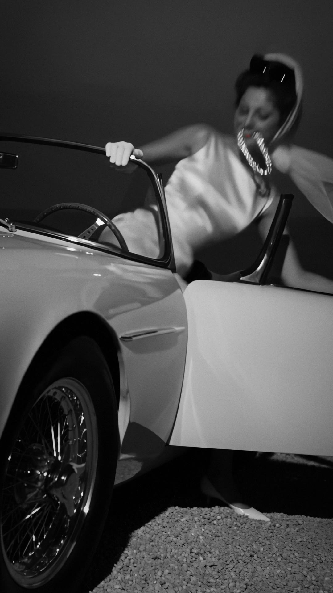
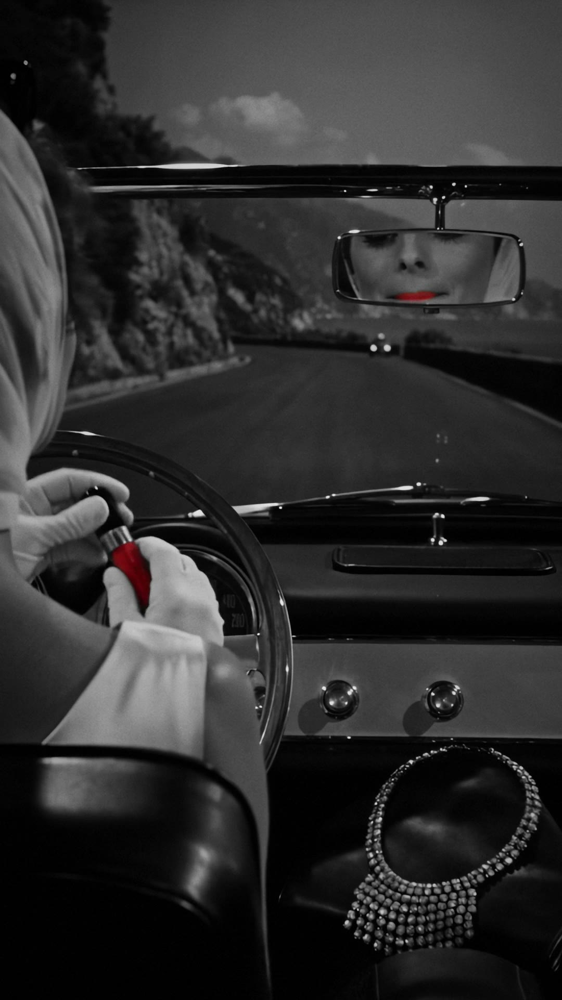
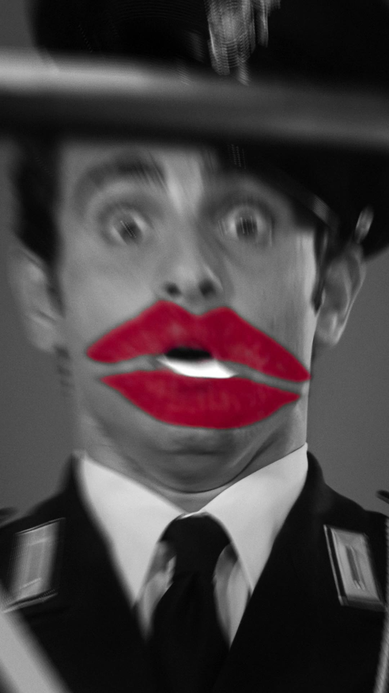
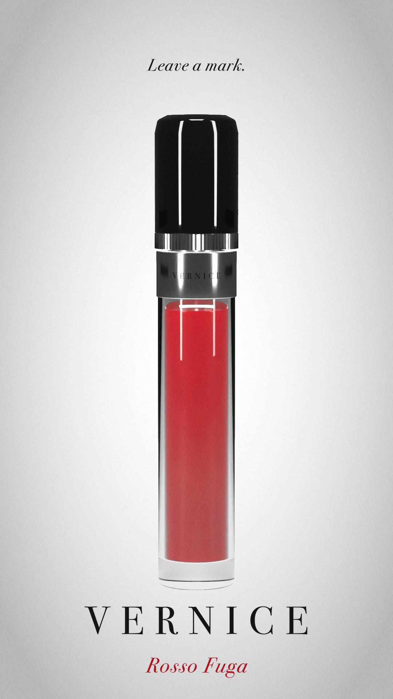

House Concept · Amalfi, 1962
Rule number one: never get caught.
Rule number two: leave a mark.
The Idea
VERNICE is an invented Italian lip lacquer, and Rosso Fuga, the red that runs, is its first shade. Its launch film is a heist told in black and white, where only one thing is allowed to keep its colour: her lips, and every mark they leave behind.
A terrace party on the Amalfi coast, 1962. A gloved hand lifts a diamond necklace from a Count's pocket and seals it with a kiss on his cheek. A white convertible takes the coast road at dusk, and when the carabinieri close the road, she does the only thing she has ever done. She leaves a mark.
25s
Launch Film
1
Colour Allowed
1962
Amalfi Coast
9:16
Made for the Feed

Amalfi, 1962.
The whole world in black and white.
Except her.
Rule number one, darling.
Never get caught.

The Count never felt the necklace go.
Only the kiss.

The coast road at dusk.
She doesn't run. She drives.
Even a getaway
deserves a fresh coat.

Then the road closes.
Rule number two.

She doesn't argue.
She blows him a kiss.

If you do get caught,
leave a mark.
The Film
01
A terrace party at golden hour. The necklace leaves the Count's pocket, and the only proof is the print on his cheek.
02
Over the convertible's door and down the coast road, hairpin after hairpin, with a touch-up in the mirror at speed.
03
Nose to nose with the carabinieri. One blown kiss, one print on the glass, one stunned officer, one gap in the barrier.
04
The camera dives through the kiss itself and lands where the red began: the lacquer pouring into its tube.
Selected Frames




Colour Strategy
The film is shot as a 1962 silver print: deep blacks, grain, a soft vignette, the Amalfi sun turned to dusk. Nothing in it carries colour except the product. Her lips, the print on the Count's cheek, the mark on the windscreen and the lacquer in the tube are one exact red, so the eye can only ever follow the shade.
Silver Black
Amalfi Grey
Linen White
Rosso Fuga
Leave a mark.